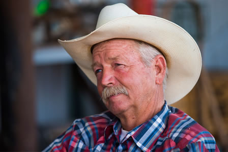

Land of Shadows
land of | shadows
Sometimes, the border ranchers hear the horses whinny in the corral at midnight, and see shadows moving silently past the barn. They've ridden over a ridge and stumbled into cartel "drug mules" — post stuffed in backpacks, assault rifles in hand.
After more than a decade of outrage about border security, cattlemen and women in the thorny southern Arizona outback grudgingly share the memories. Fences and irrigation lines cut. Homes and sheds broken into. Border Patrol sirens screaming through darkness in pursuit of drug-running vehicles. On of their own murdered in cold blood.
But in this land of dust and shadows, what most weighs on ranchers is not just what's seen, but what's unseen.
Cochise County, Ariz.
Main header for ranch Ipsum sub lorem
Across hundreds of miles, cattle ranchers tell remarkably similar stories, from flowing grasslands of the San Rafael Valley to gnarly peaks of the Atascosa Mountains to saguaro-studded desert.
Ranching is a heritage of land, a family legacy, a lifestyle. It’s a cycle of fence mending, cactus dodging and calf branding, measured by sweat and blisters.
Most families have been at it more than a century, isolated in wild, lonely, peaceful country with only the buzzing of flies and the bawling of calves.
These operations today run about 150,000 head of cattle in southern Arizona, an $18 million economic driver in Cochise County alone. Ranches and grazing leases account for much of the land area, and lifestyle.
The Ladd-San Jose Ranch started up when Pancho Villa’s revolutionaries marauded along the border.
More than 120 years later, John Ladd runs cattle there, along 10 miles of border in Cochise County. he recalls a time when nearly all of the locals employed Mexican cowboys. “We had Loreto,” he says. “My dad sponsored him for citizenship, and always kidded that he was my brother.”
At a ranch near Nogales, Robert Noon offers a similar memory: “You had your wetvacks coming across,” he says, seemingly unaware that, for some, the word cuts like barbed wire. “They were actually looking for a job — not a handout. We’d give ‘em a peanut butter and jelly sandwich and they were on their way.”
During the 1980s, perhaps 300 border crossers would pass through a ranch each month. They were meek and respectful, begging for water before heading north.
And then the borderland slowly turned to hell.
In the ’90s, Ladd says, 300 migrants were crossing his land daily.
By the early 2000s, a boom was underway. More migrants, more border patrol, more fences.
Under the George W. Bush and Obama administrations, the U.S. Border Patrol nearly doubled the number of agents working on the Southwest border to over 17,000.
The Border Patrol budget has more than tripled, from $1 billion in 2000 to $3.6 billion last year. Beginning in 2006 under the Secure Fence Act of 2006, the government also built about 700 miles of pedestrian and vehicle barriers. Obama’s administration also added millions of dollars worth of motion sensors, trail cameras, flood lights and other technology collectively described as a “virtual fence.”
explainer card
What types of fences are there on the border today?
But, because agents mostly patrolled many miles north of the Mexican boundary, ranches remained a no-man’s land where rival cartels and banditos waged war.
On his ranch near Rio Rico, David Lowell drew a “Map of Atrocities” to keep track of where shootouts occurred and bodies were found.
Then came the atrocities of 2010.
To the east, past Ladd’s spread, a rancher named Robert Krentz was killed. Authorities followed tracks from the murder site to the border, where they lost the trail. Officially, the killer has never been identified.
And to the west, in the backcountry of Lowell’s ranch, Border Patrol Agent Brian Terry was cut down in a gunfight with bandits.
Today, there’s a monument to Terry in the remote, tangled canyon where he died.
It is, in essence, a private memorial – almost impossible to find or access. Like so many pieces of the border story, it remains unseen.
“I’m 100 percent certain we’re being watched right now by someone affiliated with the cartel.”
Quote Name Long
Quote Attribution
Deputy Mike Magoffin heads east out of Douglas, Arizona, his head on a swivel.
Magoffin stops to inspect footprints across the border road. The tracks are a day old, so he moves on.
Magoffin’s a deer hunter, and tracking smugglers or immigrants involves the same skill set and adrenaline. “It’s OK,” he adds, “as long as it doesn’t extrapolate into pulling the trigger.”
The radio picks up occasional chatter among Border Patrol agents. Not one no word of immigrants or drug runners.
Magoffin pulls out binoculars and points to a boulder-strewn bluff on the Mexican side – a smuggler’s lookout post.
“I’m 100 percent certain we’re being watched right now by someone affiliated with the cartel,” he says.
He just can’t see them.
Quote Name
Quote Attribution
Magoffin is on ranch patrol. When things got bad on the border, the Cochise County Sheriff’s Office created a team of deputies to help cattle growers deal with the immigrants, smugglers and Border Patrol.
For 25 miles, fencing is variable. Some areas are guarded by an 18-foot bollard-style barricade; others have only Normandy vehicle barriers. Magoffin steps up to the more imposing fence, scales it in a matter of seconds, then jumps back to earth.
The road ends atop a hill near the Mafioso Trail. From that point for 20 miles, the United States and Mexico are separated only by barbed wire.
Magoffin says this is probably the hottest smuggling zone. He dramatically peers in all directions, seeing no one. “It’s because of all the Border Patrol presence,” he says, sarcastically. “We haven’t seen one since the Slaughter Ranch, about 40 minutes ago.”
In their words
-

“Enforce our immigration laws first. Put Border Patrol agents in sight of one another (along the international line). If you have line of sight, you don’t need a wall.”
John Ladd,
Rancher
Next
-
“Enforce our immigration laws first. Put Border Patrol agents in sight of one another (along the international line). If you have line of sight, you don’t need a wall.”
John Ladd,
Rancher
back
Reminded that the number of agents roughly doubled during the past decade, Magoffin nods. “There may be more back at the station,” he allows, “but out here? It doesn’t look like it.”
Ranchers down here will tell you they despised the Obama administration, and helped vote Donald Trump into the White House.
Yet a funny thing happens when you ask them about the president’s famous promise of a “tall, powerful, beautiful” border wall.
Almost unanimously, they think it’s bad idea.
John Ladd, a cowboy who looks like the Marlboro man and runs cattle along 10 miles of border in Cochise County: “Enforce our immigration laws first. Put Border Patrol agents in sight of one another (along the international line). If you have line of sight, you don’t need a wall.”
Manuel Solomon, a 71-year-old caballero, who has just finished castrating and branding calves near Rio Rico: “It won’t really matter. They (immigrants) will still come here. They’ll still climb it or go around it to find jobs.”
Robert Noon, who works a couple cow-calf operations outside Nogales: “A wall is a wall. It’s going to stop some traffic, but they’ll find a way around it. … In the long term? It’s a major waste of money. And it’s kind of ludicrous to think Mexicans will pay for it.”
explainer card
-
What types of fences are there on the border today?
next -
And then the borderland slowly turned to hell.
In the ’90s, Ladd says, 300 migrants were crossing his land daily.
By the early 2000s, a boom was underway. More migrants, more border patrol, more fences.
backnext -
And then there is this page
In the ’90s, Ladd says, 300 migrants were crossing his land daily.
By the early 2000s, a boom was underway. More migrants, more border patrol, more fences.
back
David Lowell, a rancher who also has a degree in mine engineering, estimates that a three-story concrete wall might eliminate 80 percent of the illegal traffic, adding, “That would be all to the good as far as we’re concerned.”
On the other hand, Lowell says, a barrier like the communist regime erected in East Berlin might work much better: “It would be two, sturdy, razor-wire fences with electrical currents and a road between them.”
“The wall without the agents won’t do anything,” Magoffin says. “If you tell me, ‘Everything you want is on the other side of the wall and I won’t look,’ I’m going over that wall.”
Ladd concedes that today’s rancher outrage is aimed mostly at how things used to be, not how they are.
Ladd has not seen migrants on the property since Christmas. No smugglers’ vehicles have come through in 18 months.
In fact, illegal immigration has been plummeting for years. Border Patrol data show 54,891 people were apprehended in southern Arizona’s Tucson Sector in 2016 – about one-tenth the number captured in 2000.
An even sharper decline this year has been attributed, at least in part, to prospective immigrant fears after President Donald Trump took office and signed executive orders to start planning for the wall. Overall apprehensions dropped by two-thirds in April.
Drive the border anywhere in this region and the story is the same. Rancher frustration is real, palpable.
But the crossers, well, they aren’t around to be seen.
Ladd hops in an old, red pickup truck and churns a 3-mile trail of dust to newly installed border fence. Thick metal slats, 18 feet high, are emblazoned with the words “Korean Steel.”
“This is probably 90 percent effective,” Ladd says. “It’s the best I’ve seen as far as design.”
A brisk wind blows from Sonora, making a “shwoooo” sound as it crosses through fencing and into the United States.
“That’s a wonderful sound,” Ladd says, smiling.
But in the wind is the whisper of the past, invisible but inescapable.
On Lowell’s ranch, cowhand Reed Thwaits maneuvers a Jeep over steep, rutted roads until he finally reaches a cattle tank and a giant mesquite.
This, he explains softly, is a so-called “rape tree.” It was once adorned with women’s bras and underwear. Coyotes would sexually assault some of the female migrants who hired them, leaving undergarments in the branches as trophies.
The idea of rape trees is laced through ranchland lore, as universal as it is unverifiable.
Thwaits shakes his head. “Not a safe place to be … I’ve seen (immigrant) women crying like they had been raped, abused.”
Quote Name
Quote Attribution

Quote Name
Quote Attribution
explainer card
-
What types of fences are there on the border today?
next
-
And then the borderland slowly turned to hell.
In the ’90s, Ladd says, 300 migrants were crossing his land daily.
By the early 2000s, a boom was underway. More migrants, more border patrol, more fences.
back
next
-
And then there is this page/p>
In the ’90s, Ladd says, 300 migrants were crossing his land daily.
By the early 2000s, a boom was underway. More migrants, more border patrol, more fences.
back